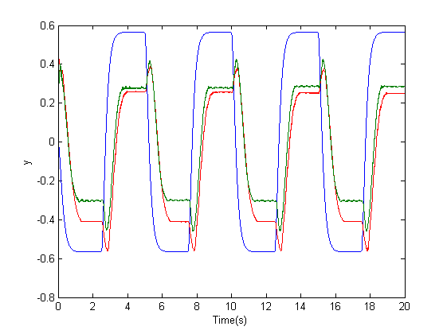

Contents
Ex.1
Matriz de Controlabilidade
A=[0 0 1 0; 0 0 0 1; 0 566 -37 0; 0 -922 37 0]; b=[0 0 65 -65]'; c=[1 1 0 0]; CM=[b A*b A*A*b A*A*A*b] if rank(CM)<4 display('The system is NOT controlable'); else display('The system IS controlable'); end
CM =
0 65 -2405 52195
0 -65 2405 -29055
65 -2405 52195 -569985
-65 2405 -29055 -286195
The system IS controlable
Ex.2
Matriz de Observalidade
OM=[c;c*A;c*A*A;c*A*A*A] if rank(OM)<4 display('The system is NOT observable'); else display('The system IS observable'); end
OM =
1 1 0 0
0 0 1 1
0 -356 0 0
0 0 0 -356
The system IS observable
Ex.3
Diagrama de Bode para o sistema em cadeia aberta
[num,den]=ss2tf(A,b,c,0); comp=tf(num,den) poles=pole(comp) bode(comp);
comp =
2.314e04
-----------------------------------
s^4 + 37 s^3 + 922 s^2 + 1.317e04 s
Continuous-time transfer function.
poles =
0.0000 + 0.0000i
-7.4016 +23.2085i
-7.4016 -23.2085i
-22.1969 + 0.0000i
Ex.4
Projecção dos ganhos K e L
alphaK=poly([-70 -20 -10 -10]); alphaL=poly([-50 -50 -30 -30]); a=poly(A); M=[1 0 0 0; a(2) 1 0 0; a(3) a(2) 1 0; a(4) a(3) a(2) 1]; K=(alphaK(2:5)-a(2:5))*inv(M)'*inv(CM) L=inv(OM)*inv(M)*(alphaL(2:5)-a(2:5))'
K =
6.0501 -30.5345 1.0297 -0.0933
L =
1.0e+03 *
0.0335
0.0895
-1.1612
5.0882
Ex.5
Simulação do sistema com compensador
open_system('p5'); sim('p5'); figure plot(ref); hold on plot(y,'r'); hold off xlabel('Time(s)'); ylabel('y');
Ex.6
Diagrama de Bode para o sistema em cadeia fechada
[num,dem]=ss2tf(A,b,c,0); sist=tf(num,dem); [num,dem]=ss2tf(A-L*c-b*K,-L,-K,0); comp=tf(num,dem); transf=series(comp,sist); transf=feedback(transf,1) bode(transf) p=pole(transf) z=zero(transf)
transf =
-9.724e07 s^3 - 4.853e09 s^2 - 4.559e10 s + 3.15e11
------------------------------------------------------------------------
s^8 + 270 s^7 + 3.03e04 s^6 + 1.839e06 s^5 + 6.573e07 s^4 + 1.41e09 s^3
+ 1.762e10 s^2 + 1.169e11 s + 3.15e11
Continuous-time transfer function.
p =
-70.0000
-50.0000
-50.0000
-30.0000
-30.0000
-20.0000
-10.0000
-10.0000
z =
-32.2676
-22.1688
4.5284

Ex.7
Ensaio com o sistema real
load('matlab_ex7_com2filtros.mat'); plot(rf(:,1),rf(:,2),p(:,1),p(:,2)+g(:,2),'r') xlabel('Time(s)'); ylabel('y');
Ex.7-Continuação
Ensaio com integrador
A=[0 0 1 0; 0 0 0 1; 0 566 -37 0; 0 -922 37 0];
b=[0 0 65 -65]';
c=[1 1 0 0];
A2=[A b;0 0 0 0 0];
b2=[zeros(4,1); 1];
c2=[c 0];
alphaK=poly([-70 -20 -10 -10 -50])
alphaL=poly([-50 -50 -30 -30 -30])
a=poly(A2)
CM2=[b2 A2*b2 A2*A2*b2 A2*A2*A2*b2 A2*A2*A2*A2*b2]
OM2=[c2;c2*A2;c2*A2*A2;c2*A2*A2*A2;c2*A2*A2*A2*A2]
M2=[1 0 0 0 0;
a(2) 1 0 0 0;
a(3) a(2) 1 0 0;
a(4) a(3) a(2) 1 0;
a(5) a(4) a(3) a(2) 1];
K=(alphaK(2:6)-a(2:6))*inv(M2)'*inv(CM2)
L=inv(OM2)*inv(M2)*(alphaL(2:6)-a(2:6))'
load('matlab_exint.mat');
plot(rf(:,1),rf(:,2),p(:,1),p(:,2)+g(:,2),'r')
xlabel('Time(s)');
ylabel('y');
alphaK =
1 160 8800 202000 1990000 7000000
alphaL =
1 190 14200 522000 9450000 67500000
a =
1.0e+04 *
0.0001 0.0037 0.0922 1.3172 0 0
CM2 =
0 0 65 -2405 52195
0 0 -65 2405 -29055
0 65 -2405 52195 -569985
0 -65 2405 -29055 -286195
1 0 0 0 0
OM2 =
1 1 0 0 0
0 0 1 1 0
0 -356 0 0 0
0 0 0 -356 0
0 328232 -13172 0 23140
K =
302.5065 -857.8320 15.9829 -35.2017 123.0000
L =
1.0e+03 *
0.3944
-0.2414
-0.1575
7.7745
2.9170
Ex.8
Ensaio sem pré-filtro
load('matlab_ex8_semfiltro.mat') plot(rf(:,1),rf(:,2),p(:,1),p(:,2)+g(:,2),'r') xlabel('Time(s)'); ylabel('y');
Ex.9
Efeito da frequência de corte do pré-filtro
load('matlab_ex9_wn1_2566.mat') plot(rf(:,1),rf(:,2),p(:,1),p(:,2)+g(:,2),'r') xlabel('Time(s)'); ylabel('y');
Ex.10
Ensaio sem sinal do extensómetro
load('matlab_ex7_com2filtros.mat') original=[p(:,1) p(:,2)+g(:,2)]; load('matlab_ex10_comfiltro.mat'); plot(rf(:,1),rf(:,2),p(:,1),p(:,2),'r',original(:,1),original(:,2)) xlabel('Time(s)'); ylabel('y');
Ex.11a
Projeção de outros ganhos - 1ª Sugestão
alphaK=poly([-70 -20 -10 -10]); alphaL=poly([-75 -75 -45 -45]); a=poly(A); M=[1 0 0 0; a(2) 1 0 0; a(3) a(2) 1 0; a(4) a(3) a(2) 1]; K=(alphaK(2:5)-a(2:5))*inv(M)'*inv(CM) L=inv(OM)*inv(M)*(alphaL(2:5)-a(2:5))' load('matlab_ex11a.mat') plot(rf(:,1),rf(:,2),p(:,1),p(:,2)+g(:,2),'r') xlabel('Time(s)'); ylabel('y');
K =
6.1330 -30.4307 1.0316 -0.0912
L =
1.0e+04 *
0.0594
-0.0391
-1.0171
2.2884
Ex.11b
Projeção de outros ganhos - 2ª Sugestão
alphaK=poly([-70 -20 -1+5*1i -1-5*1i]); alphaL=poly([-50 -50 -30 -30]); a=poly(A); M=[1 0 0 0; a(2) 1 0 0; a(3) a(2) 1 0; a(4) a(3) a(2) 1]; K=(alphaK(2:5)-a(2:5))*inv(M)'*inv(CM) L=inv(OM)*inv(M)*(alphaL(2:5)-a(2:5))' load('matlab_ex11b.mat') plot(rf(:,1),rf(:,2),p(:,1),p(:,2)+g(:,2),'r') xlabel('Time(s)'); ylabel('y');
K =
1.6101 -8.8981 -0.3445 -1.1903
L =
1.0e+03 *
0.0336
0.0894
-1.1514
5.0768